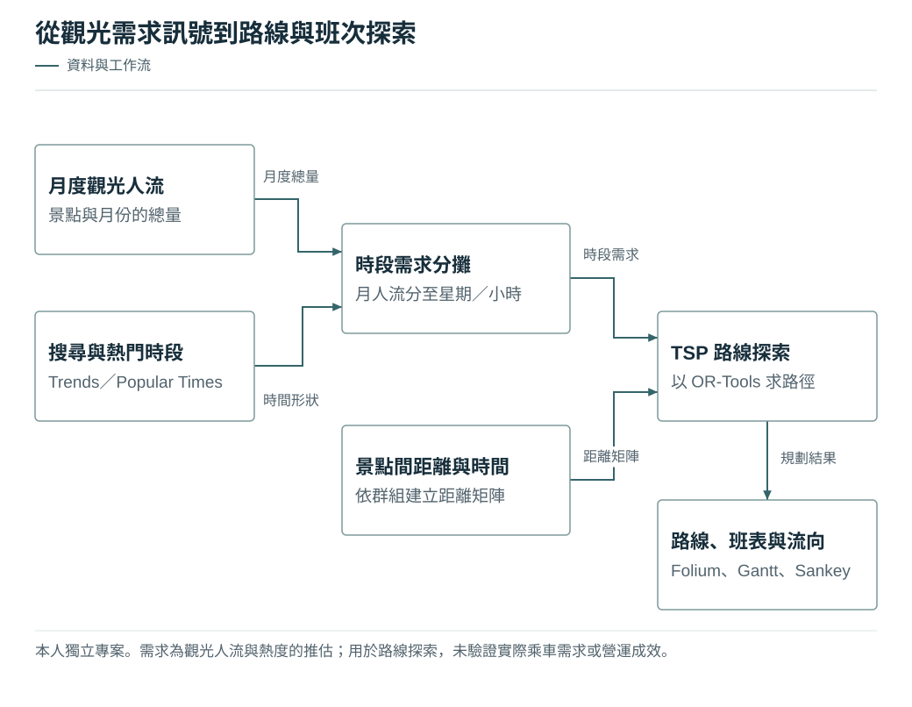
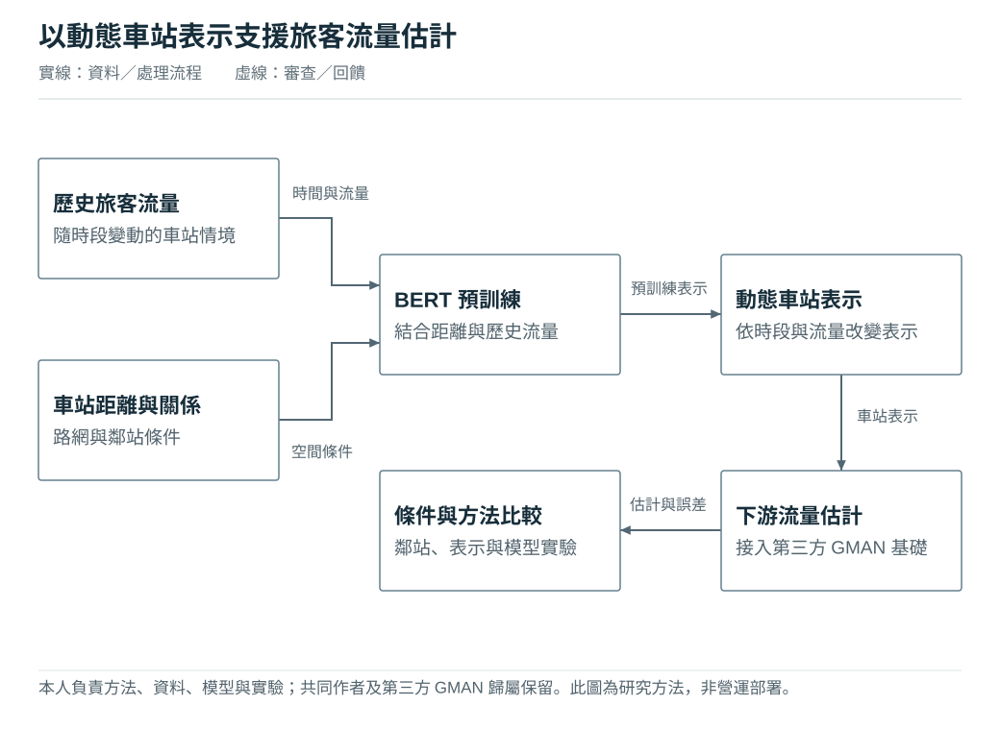
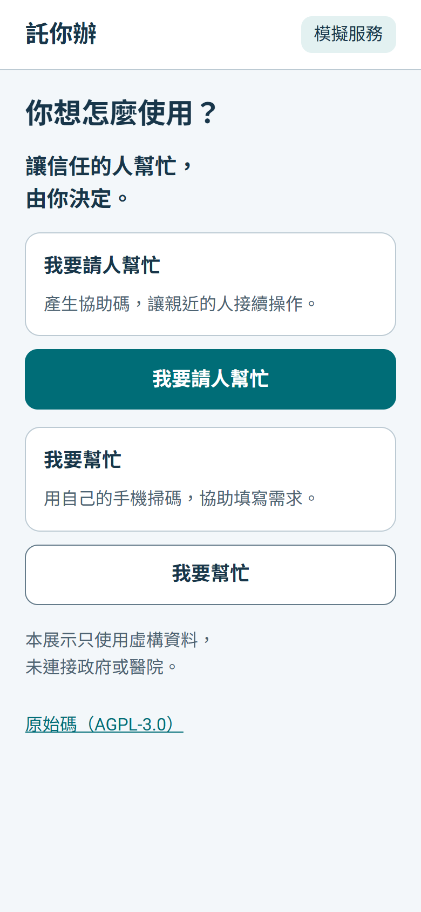
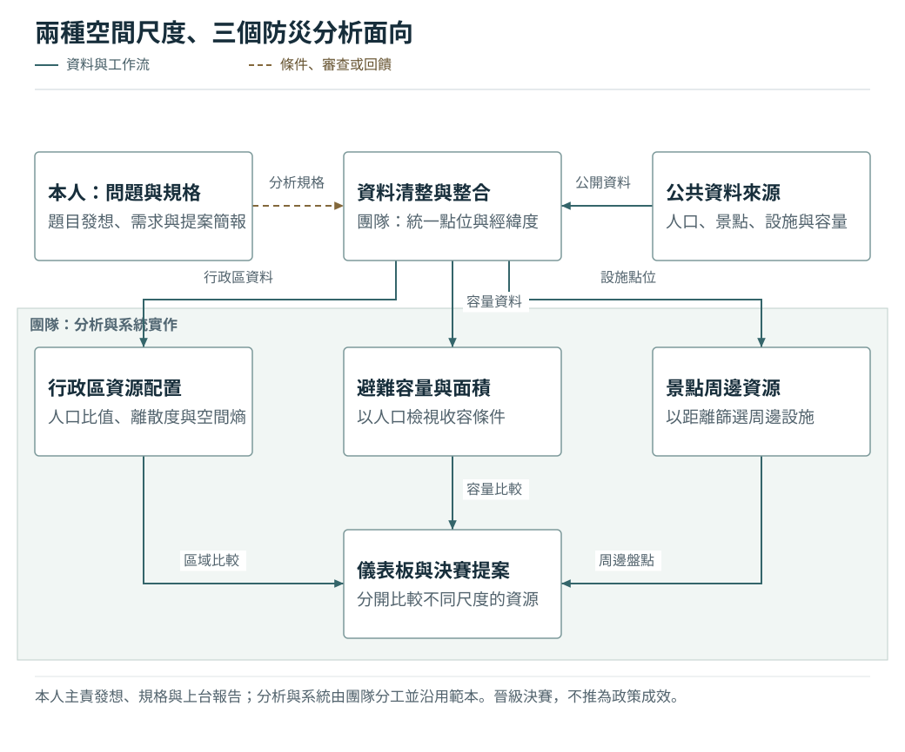
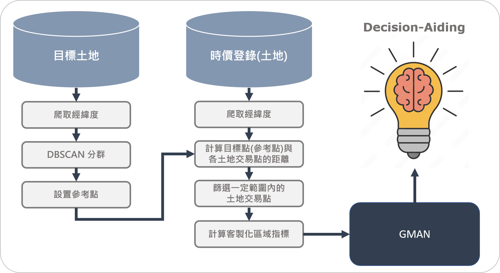
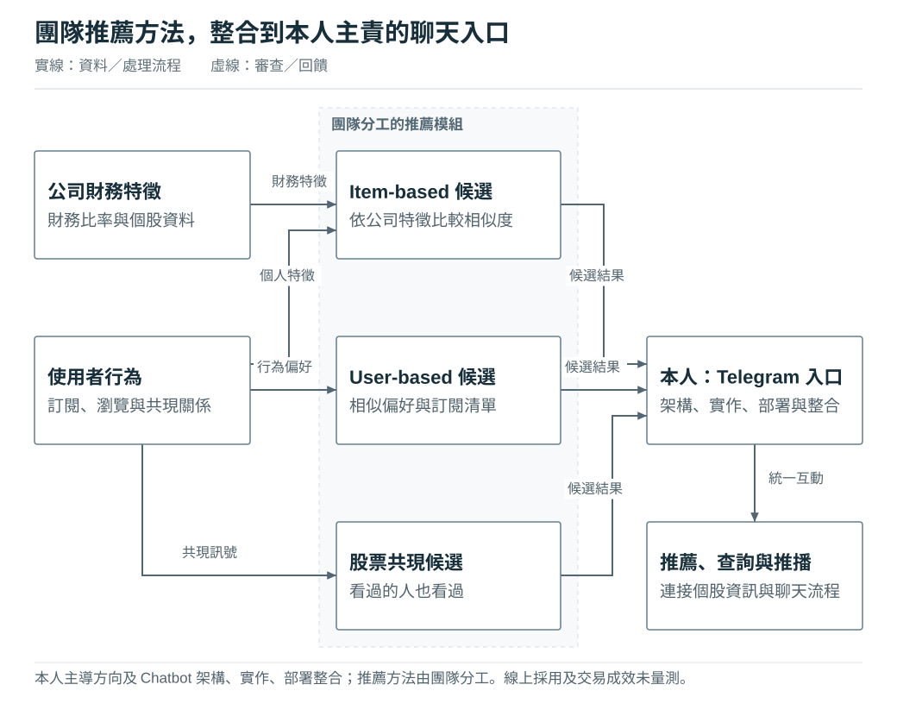
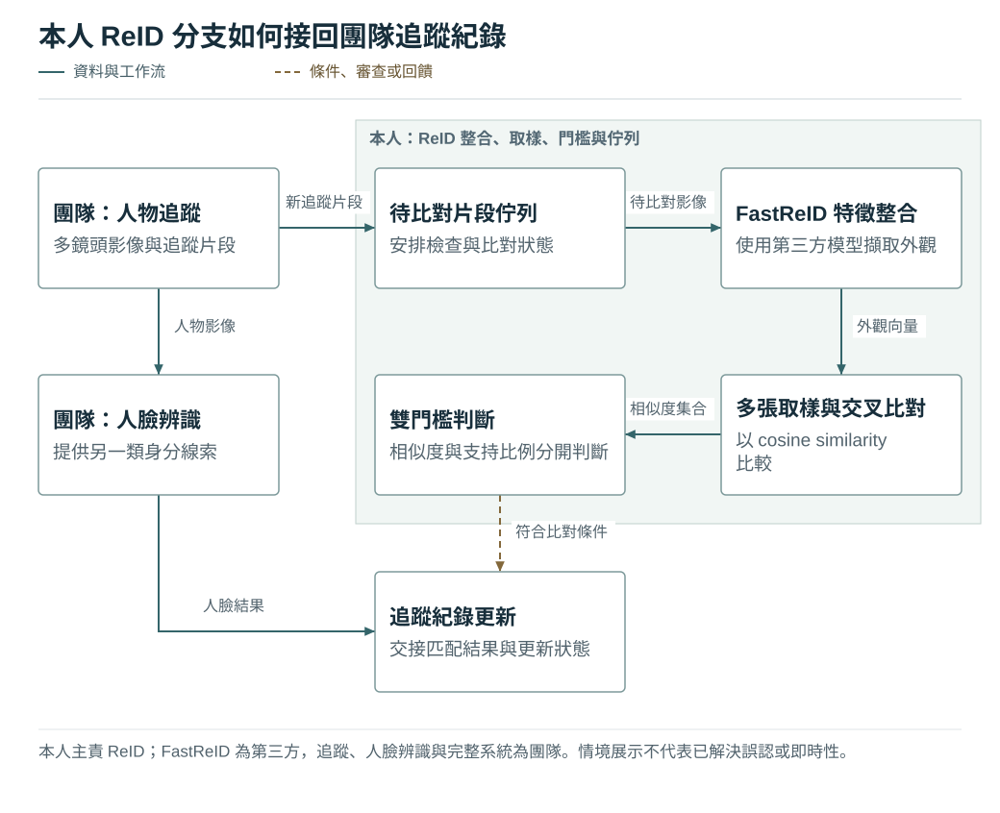

專案與案例
涵蓋工業 AI 產品、資料分析、研究與競賽。各案例先呈現核心問題、負責範圍與成果，再深入方法、設計取捨及驗證範圍。
資料、診斷與場域交付
4 則從資料品質與判讀邊界出發，建立可測試及交接的分析流程。
2026 年診斷研究與開發紀錄
- 核心問題
- 故障型態、嚴重度及劣化時間回答不同問題，資料不完整時需揭露不確定性。
- 負責範圍
- 設計資料品質、運轉偵測、故障分類、嚴重度與 RUL 的分層診斷方法，檢查異常比例的分母、資料覆蓋及抽樣偏差。
- 成果
- 建立分層診斷流程、資料不足時的降級規則及抽樣比較方法；抽樣策略仍在研究。
核心問題與我的做法 · 2 個故事
診斷型態、嚴重度與壽命回答不同問題
若把故障分類、振動級別和壽命混成單一健康分數，使用者難以知道數值代表原因、程度還是時間。
將運轉區間、故障型態、嚴重度與時間外推分層。我主導從設備資訊、前處理、運轉偵測到分類、ISO、RUL及報告的順序，保留每一層的資料與信心。
建立可解釋、可追查的診斷流程；資料不足時降級或停止判讀，讓報告清楚呈現能支持到哪一層結論。
異常百分比先問分母是什麼
每段運轉只取極值容易實作，卻讓長短運轉段各算一票，未公平反映暴露時間。
接受利害關係人的挑戰，提出固定時間窗比較，同時承認原始波形覆蓋不足。我從 peak 方法推進 time-bin 研究，拆開事件比例、時間比例與已觀測波形比例，比較偏差、覆蓋與系統成本。
將統計定義和正式資料限制一起納入決策；time-bin 仍是研究比較，沒有宣稱已完成正式算法選型。
技術細節與工作範圍
 成果為場域可行性驗證與報告方法；部署及正式驗收另行確認。（點圖放大）
成果為場域可行性驗證與報告方法；部署及正式驗收另行確認。（點圖放大）1 / 1
2026 年 POC 紀錄
- 核心問題
- 資料覆蓋、運轉狀態與抽樣方式影響診斷，需驗證報告結論成立的條件。
- 負責範圍
- 主導設備資訊、前處理、運轉偵測、故障分類、嚴重度及 RUL 的驗證流程，以 notebook 核對數值與判讀。
- 成果
- 完成場域診斷與可重用報告方法，將資料覆蓋不足及低信心結果納入降級條件，供後續報告服務整合。
核心問題與我的做法 · 2 個故事
先定義診斷能說到哪裡，再產出報告
原始資料覆蓋及運轉占比不同，報告若固定輸出分類與壽命，會製造資料不支持的確定性。
將資料充分性、運轉覆蓋及擬合信心作為可視降級條件。我主導診斷鏈與品質邊界，AI agents及skills協助處理資料、產生可追溯報告產物。
建立由設備與資料事實走到診斷、嚴重度及時間的整合流程；缺資料時保留限制而非強行結論。
一次性分析怎樣留下可重用的工作方式
客戶分析包含基本資訊、資料前處理及多段診斷；只靠臨時對話不利於重跑及一致審查。
先用可重用的分析步驟驗證品質規則，再轉成可編排流程。我主導流程及判讀規則，驗證局部重跑、資料不足時的處理與中間結果，再銜接報告服務。
留下從POC到可重用報告工作的演進路徑；後續服務的功能整合範圍依報告專案核對。
2025 年分析紀錄
- 核心問題
- 波形量大且沒有交接 SOP，需選出有決策價值的事件並保留可回查資料。
- 負責範圍
- 負責事件資料選取、波形處理及報告交付流程，與現場及品質團隊對齊設備、格式與事件範圍，串接批次分析與人工審查。
- 成果
- 完成多輪事件分析報告及可重跑的交接流程，結果適用於已選取的事件窗口。
核心問題與我的做法 · 2 個故事
保留完整事件歷史，只搬回需要的波形
現場原始資料量大，要求全部波形回傳會壓垮傳輸與分析；只看畫面又缺少可驗證依據。
保存完整資料庫，以事件時間定位需要深入分析的波形窗口。我定義事件導向選取策略，與FAE及品保對齊配置、資料格式、命名和交接方式。
完成事件分析與多輪報告，形成可重複的交接流程；未選時段不宣稱已診斷，亦無法據此估計全時段漏報。
把離散工具接成能重跑的交付管線
既有工具能做個別分析，卻缺少從事件清單到累積圖及報告的一致工作流。
補上資料整理、工具調度與人工診斷之間的工程流程。我以批次腳本串接環境、事件定位、波形整理、平行處理與合併圖，再人工核對AI協助起草的說明。
完成多輪報告與 FAQ 修訂，保留從資料選取、中間圖表到人工審查的重跑流程，支援後續交接。
2026 年分析紀錄
- 核心問題
- 客戶對負載及穩態振動提出疑問，需重建統計口徑並區分關聯及根因。
- 負責範圍
- 將客戶三項觀察轉為可檢驗問題，使用分鐘中位數、非參數檢定、多重比較校正及效果量複核，完成分析與客戶說明。
- 成果
- 已交付分析及客戶說明簡報，將統計差異與根因假說分開，列出需現場補驗的資訊。
核心問題與我的做法 · 2 個故事
接住客戶質疑，把觀察轉成可檢定問題
客戶讀過振動報告後，對負載、方向及穩態振動提出觀察，原本的總體描述不足以回答。
依工況重新分層，分開統計關聯與尚未確認的設備根因。我以分鐘中位數降低秒級自相關，配合多重比較及效果量，重新檢驗三項觀察並整理客戶說明。
完成並交付深入分析與客戶說明，將統計關聯、可支持的解讀及需要現場補驗的假說分開。
先補資料缺口，再重算事件口徑
日曆上的資料空白可能把仍在運轉的設備錯判為停止，進而改變事件切分與統計。
分析紀錄將兩條資料鏈分開核對，補齊缺口、比對重疊時戳後重新切分事件；我主導的分析口徑與客戶說明再依更新資料修訂。
補齊資料後重新切分事件並更新下游引用，讓報告結論對應一致的資料基準；節點中斷根因仍另案追查。
研究、空間分析與早期作品
7 則研究發表、學位研究、空間分析及早期作品；依實際分工呈現研究與系統成果。
 不展示真實地址；估計係數未證明已校準到實際道路距離。（點圖放大）
不展示真實地址；估計係數未證明已校準到實際道路距離。（點圖放大）1 / 1
2020 年實習實作紀錄
- 核心問題
- 訪區分散程度影響訪員路程及預算，需可計算距離及代表路線。
- 負責範圍
- 建立訪區分組、點間距離、缺值補估與 TSP 路線流程，將抽樣地址轉為訪查路程及預算規劃資料。
- 成果
- 輸出訪區總距離、平均距離、樣本順序及路線地圖，供調查規劃。
核心問題與我的做法 · 2 個故事
先把路線問題限定在訪員真正負責的範圍
抽樣地址分散；若跨區一起求最短路線，數學解不一定符合實際派工。
以鄉鎮與訪員編號定義訪區，再分區求路線。 合併地址座標、建立各訪區距離矩陣，以路線求解器輸出拜訪順序。
產出每個訪區的總距離、平均距離、樣本順序與地圖，提供規劃依據。
距離抓不到時，規劃仍能繼續
大量地址點對的實際步行距離可能缺漏；直接以直線距離代替會低估路程。
先保留直線距離底表，再對缺值採1.5倍直線距離的估計規則。 逐筆保存距離擷取結果，補齊雙向與自身距離，建立可供求解的矩陣。
使後續規劃不因缺值中斷；係數為當時估計規則，未證明已校準到實際路程。
 原 notebook 分析圖：景點人流與搜尋趨勢；非路線成果圖。（點圖放大）
原 notebook 分析圖：景點人流與搜尋趨勢；非路線成果圖。（點圖放大） 專案原始資料處理與方法流程；不代表已完成路線最佳化。（點圖放大）
專案原始資料處理與方法流程；不代表已完成路線最佳化。（點圖放大）
本人獨立專案。需求為觀光人流與熱度的推估；用於路線探索，未驗證實際乘車需求或營運成效。（點圖放大）1 / 3
2021 年建檔紀錄；專案期間待補
- 核心問題
- 觀光需求隨時段變動，路線及班次規劃需整合需求與距離。
- 負責範圍
- 整合觀光人流、Google Trends、Popular Times 及景點距離，建立需求分攤、距離矩陣、TSP 路線探索與視覺化流程。
- 成果
- 完成需求分攤、距離矩陣及 TSP 流程，以地圖、Gantt、Sankey 呈現路線與班次。
核心問題與我的做法 · 2 個故事
把月度觀光人流變成可排班的時段訊號
觀光人流是月總量，班次規劃卻需要星期與小時的需求形狀。
結合搜尋熱度與熱門時段，將月人流分攤到星期／小時。 串接觀光資料、Google Trends及Popular Times，形成需求分攤流程。
形成可進入路線班次探索的時段需求資料；不是實測乘車需求。
讓路線與時段規劃能被看懂
僅有距離矩陣與求解結果，難以討論路線和人流的關係。
將路線、時間與流向分別用地圖、班表和流向圖呈現。 按group建立距離矩陣並求TSP，以Folium、Gantt、Sankey產出探索視圖。
完成從需求資料到路線呈現的探索流程；無營運採用或節省成本證據。
 共同研究原圖：BERT 動態嵌入與旅客流量預測流程。（點圖放大）
共同研究原圖：BERT 動態嵌入與旅客流量預測流程。（點圖放大）
本人負責方法、資料、模型與實驗；共同作者及第三方 GMAN 歸屬保留。此圖為研究方法，非營運部署。（點圖放大）1 / 2
2021 年論文發表
- 核心問題
- 旅客流量估計需表達隨時間變動的交通關係。
- 負責範圍
- 負責方法發想、資料處理、模型建構與實驗，與共同作者發表動態嵌入及旅客流量估計研究。
- 成果
- 形成 IIAI AAI 2021 正式論文及 Competitive Paper Award。
核心問題與我的做法 · 2 個故事
同一座車站，不應永遠只有同一個表示
固定的車站向量難以表達尖峰與離峰不同的旅運狀態。
我負責方法發想、資料處理、模型建構與實驗。共同研究以 BERT 預訓練結合車站距離與歷史流量，產生隨時段及流量改變的車站表示，再接到下游旅運量估計。
將方法想法落成模型與比較實驗，與共同作者形成 IIAI AAI 2021 論文，並獲 Competitive Paper Award。
在有限訓練資源下，讓多組實驗仍能比較
鄰站、距離與路線條件要分開比較，實驗多而 GPU 有限，重複前處理也會占用時間。
我負責模型與參數實驗，保存各組設定與結果，留下不同鄰站及表示條件的比較紀錄。從這一階段到後續研究，我逐步累積 Shell 並行、獨立 log／模型檔、H5 前處理快取及參數探索等工作方式；各案使用程度不同。
留下不同鄰站與表示條件的實驗軌跡，支援方法比較與結果彙整；這些工作方式也延續至後續研究，使用程度依專案而異。
 共同研究原圖：交通網路表示學習與流量預測流程。（點圖放大）
共同研究原圖：交通網路表示學習與流量預測流程。（點圖放大） 本人實際責任為程式碼與技術支援、偏輔助；圖中預訓練、MLAN 與實驗為共同研究成果。（點圖放大）
本人實際責任為程式碼與技術支援、偏輔助；圖中預訓練、MLAN 與實驗為共同研究成果。（點圖放大）1 / 2
2024 年期刊發表
- 核心問題
- 捷運流量預測需將動態交通網路關係納入模型表示。
- 負責範圍
- 以共同作者身分提供程式碼與技術支援；模型方法與實驗為團隊研究。
- 成果
- 形成 Knowledge-Based Systems 2024 正式期刊論文。
研究問題與團隊方法 · 2 個故事
把捷運結構變成模型能學習的任務
轉乘站與一般站的關係不同，固定路網表示難以完整反映時變流量。
共同研究以多項預訓練任務學習車站與空間關係，結合遮蔽流量、車站序列及距離任務，再將表示轉移到流量預測模型。
團隊完成動態交通網路方法與比較實驗，形成 Knowledge-Based Systems 期刊論文。
讓時間、鄰站和路線分層參與預測
只把附近站點攤平，可能失去同路線與轉乘方向的結構。
共同研究以 MLAN 分層整合時間、車站與路線訊號，結合預訓練表示與 GRU 特徵，建立比較與驗證流程。
團隊形成可比較的交通網路預測方法；程式碼及技術支援為我的參與範圍。
 共同研究原圖：情感詞與階層式注意力模型。（點圖放大）
共同研究原圖：情感詞與階層式注意力模型。（點圖放大） 本人完成研究工作；HAN、情感詞典、共同作者與標記者保留歸屬。結果為文章情感分類，不推為投資績效。（點圖放大）
本人完成研究工作；HAN、情感詞典、共同作者與標記者保留歸屬。結果為文章情感分類，不推為投資績效。（點圖放大）1 / 2
2020 年論文發表
- 核心問題
- 金融文章情感判讀需考慮詞彙及文章層次脈絡。
- 負責範圍
- 負責文獻、問題定義、資料流程、模型建構與實驗，與共同作者發表論文；情緒標記由投資者提供。
- 成果
- 將學生研究計畫延伸為 TCSE 2020 正式論文發表。
核心問題與我的做法 · 2 個故事
從第一次研究，把模糊的情緒變成可學習的任務
金融新聞的正負面，還不足以描述讀者的激動程度；第一次做研究，也必須先把問題與標記方式定義清楚。
我完成文獻、資料與模型研究，將正負傾向及激動程度拆成兩個維度。標記流程由五位投資者獨立標記、去除極值後平均並處理分歧，保留標記者與共同作者的貢獻。
從學生研究計畫走到可訓練的分類任務與 TCSE 正式發表，累積問題定義、資料標記、模型及實驗的完整研究經驗。
模型反覆調整沒有改善，回頭檢查資料與比較方式
初期反覆改模型仍難改善效果；只有換架構，無法辨別是資料、參數或表示方式的限制。
我補充資料並比較參數與模型變體，結合 HAN 全文表示與 SAN 情感詞表示，以驗證集選模、測試集比較。這時探索較粗糙，後續研究再逐步完善消融與參數策略。
留下模型、資料與對照實驗的研究結果，也形成後續研究的改進方向；成果限情感分類，不等於投資績效。
 原始研究流程：資料準備、MCIENet 與可解釋性分析；部分前處理基於 ChINN。（點圖放大）
原始研究流程：資料準備、MCIENet 與可解釋性分析；部分前處理基於 ChINN。（點圖放大） 本人主導研究、模型、實驗與論文；前處理部分沿用 ChINN。效果與泛化依資料、anchor 及實驗設定解讀。（點圖放大）
本人主導研究、模型、實驗與論文；前處理部分沿用 ChINN。效果與泛化依資料、anchor 及實驗設定解讀。（點圖放大）1 / 2
2024 年碩士論文
- 核心問題
- DNA 序列不同尺度訊號需轉成可檢驗的三維染色質交互作用預測。
- 負責範圍
- 獨立主導研究問題、模型架構、資料流程、實驗評估及論文撰寫；部分資料前處理改寫自 ChINN。
- 成果
- 完成碩士論文、研究程式及配置，提供消融、跨資料集評估與模型解釋。
核心問題與我的做法 · 3 個故事
讓模型同時看見不同尺度的DNA訊號
只用DNA序列預測染色質交互作用，需同時處理局部片段與較長範圍訊號。
本人設計以Inception為基礎的多尺度特徵擷取，並用消融比較各組件。 實作多分支卷積與聚合，保存不同kernel、通道配置及pooling的實驗設定。 在前期研究累積的實驗方式上，整理 H5 前處理快取、各組 log／模型檔與參數探索，讓碩論的消融及參數比較更完整。
完成多尺度模型、對照實驗流程及碩士論文，讓架構的各項設計可以分開比較。
不預設大型預訓練模型能適用所有資料
不同細胞類型的DNA結構預測可能需要不同表示；預訓練規模不等於適用性。
本人比較不同細胞資料與DNABERT2基準，檢查模型的適用邊界。 在GM12878與HeLaS3評估，保留資料／模型設定及baseline流程。
論文記錄DNABERT2-512在HeLaS3的較弱表現；結論限本研究資料與設定，不概括所有預訓練模型。
分數之外，追查模型對哪段序列敏感
預測分數無法說明錨點偏移會不會讓方法失去穩定性。
本人以DeepLIFT查看序列貢獻，檢查長序列與anchor位置的限制。 以解釋分析比較模型關注區域，整理anchor中心偏移的觀察。
論文指出anchor-based方法對中心偏移的穩定性限制，保留結果解讀的邊界。
2022 年課程專案
- 核心問題
- 擷取失敗造成時序缺漏，需串接偵測、補復及展示。
- 負責範圍
- 負責 Spark 叢集、GitHub 協作及示範影片，以 Vagrant 建置一個主節點與兩個工作節點，支援團隊整合資料補值流程。
- 成果
- 團隊完成擷取、缺漏偵測、Spark MLlib 及儀表板串接的課程系統。
核心問題與我的做法 · 2 個故事
把分散式環境變成團隊可啟動的工作基底
課程系統需讓資料處理工作在多節點執行，團隊需要可重建的叢集。
本人負責Spark cluster，以Vagrant在一台電腦建立master與兩個worker。 設定節點連線、Java／Spark環境及啟動步驟。
建立可依文件啟動的叢集環境，支援團隊串接資料補值流程。
把各自運作的模組說成一條完整流程
叢集能啟動之後，擷取、儲存、補值與圖表仍分屬不同成員；展示必須讓觀眾看懂資料如何接續。
我負責 GitHub 與展示影片，團隊 README 保留各模組操作步驟；透過 Demo 呈現從原始資料到補值及圖表的流程。模型、爬蟲與資料庫依隊友分工完成。
團隊完成可展示的課程系統，我的叢集工作與整體串接展示各有明確交付；補值結果保留為模型預測。
競賽
5 則從金融推薦、電腦視覺與不動產預測，到城市防災及數位服務；分別說明賽事規模、團隊成果與我的責任。

R6決賽簡報中的實際模擬服務角色首頁；非正式登入或政府服務介接。（點圖放大） R6決賽簡報中的實際模擬服務協助入口；非正式登入或政府服務介接。（點圖放大）
R6決賽簡報中的實際模擬服務協助入口；非正式登入或政府服務介接。（點圖放大） 依決賽材料重繪；正式身分認證、政府送件與院所預約 API 未完成。（點圖放大）
依決賽材料重繪；正式身分認證、政府送件與院所預約 API 未完成。（點圖放大）1 / 3
2026 年城市通微服務大黑客松
- 核心問題
- 數位服務使用者可能需要他人協助，但資料授權與最後送出責任仍應清楚。我以授權協作為題，規劃代辦準備內容、本人確認後才能模擬送出的流程。
- 負責範圍
- 負責題目發想、應用場景、規格定義與決賽簡報，規劃授權範圍、操作流程、資料權限及驗收條件。
- 成果
- 完成提案規格與決賽簡報，團隊入圍決賽；展示聚焦單次、一案、一位代辦的模擬協作流程。
- 競賽規模
- 全台 85 隊、395 人報名；40 隊晉級正式賽。
- 參賽成果
- 團隊入圍決賽。
主辦單位競賽規模與結果
核心問題與我的做法 · 2 個故事
把需要協助的人與最後決定權分開
代辦協助填資料時，需要避免代辦直接替本人決定送出。
我從使用場景出發撰寫 SPEC，將資料準備、本人確認及模擬送出分成明確步驟，並定義修改後須重新確認的規則。
形成可向團隊與評審說明的授權協作方案；正式身分認證與真實政府送件不在模擬成果內。
將完整產品構想收斂成決賽範圍
完整 SPEC 包含期間授權與多案件，決賽需要集中展示核心情境。
我主責題目場景、規格與決賽報告；決賽講稿收斂為單次、一案、一位代辦，聚焦準備、本人確認與模擬送出。
完成聚焦核心情境的提案與決賽簡報，團隊入圍決賽；設計規劃與實際程式完成度各自記錄。
 團隊公開儀表板：人口、景點與防災資源分析；我負責題目、規格及提案簡報。（點圖放大）
團隊公開儀表板：人口、景點與防災資源分析；我負責題目、規格及提案簡報。（點圖放大）
本人主責發想、規格與上台報告；分析與系統由團隊分工並沿用範本。晉級決賽，不推為政策成效。（點圖放大）1 / 2
2025 年黑客松紀錄
- 核心問題
- 防災設施、人口與觀光景點資料分散在不同來源。只知道設施總數，不容易看出哪些地區資源集中、哪些景點周邊較少。團隊以人口需求與空間分布為切入點，讓這些差異能被比較與討論。
- 負責範圍
- 負責防災題目發想、規格定義與提案簡報，與團隊探討人口、景點及防災資源配置。
- 成果
- 團隊完成防災資源分析作品與專案說明，晉級 2025 雙北城市儀表板黑客松決賽。
- 競賽規模
- 全台 128 隊、551 人報名；50 隊、232 人晉級正式賽。
- 參賽成果
- 晉級決賽（正式賽）。
主辦單位競賽規模公告
核心問題與我的做法 · 2 個故事
從設施總數改問居民與景點是否能被照顧
只知道設施有幾個，無法直接比較人口需求與觀光熱區周邊資源。
我負責防災題目發想、規格定義與提案簡報，將人口、景點與防災資源整理為可討論的分析需求，與團隊對齊提案方向。
形成行政區資源配置、避難容量與景點周邊盤點等團隊分析方向，完成決賽提案並晉級決賽。
分開回答行政區配置與景點周邊需求
行政區人口、收容容量與景點位置採不同觀察尺度，只看一張總量表，無法同時回答整區配置與景點附近是否有資源。
我將提案需求與分析視角整理為規格，並負責上台說明；團隊分別處理行政區人口與資源、避難容量及景點周邊設施的資料與展示。
讀者可以分開查看行政區資源配置與景點周邊情況，讓不同問題各有對應的分析視角。

團隊原始報告中的資料與模型流程；GMAN為第三方基礎模型。（點圖放大） 本人主導方向、模型、實驗與決賽報告；GMAN 保留第三方歸屬。預測區域平均指標，非個別土地估價。（點圖放大）
本人主導方向、模型、實驗與決賽報告；GMAN 保留第三方歸屬。預測區域平均指標，非個別土地估價。（點圖放大）1 / 2
2022 年競賽紀錄
- 核心問題
- 土地價格及交易量受區域與時間變化影響。
- 負責範圍
- 發想題目、帶領三人團隊分工，負責模型實作、實驗與決賽簡報；以第三方 GMAN 研究實作為基礎。
- 成果
- 三人團隊完成訓練配置、區域評估、重現流程及決賽報告，獲創意獎。
- 競賽規模
- 官方初審公告入選 5 隊；未取得總報名隊數及人數。
- 參賽成果
- 晉級決賽，三人團隊獲創意獎。
官方初審入選名單
核心問題與我的做法 · 2 個故事
先定義什麼叫「這塊土地的價格」
交易分散且時間不連續，需要將單筆交易轉成可比較的區域時序目標。
我發想研究方向並帶領團隊分工，主要負責模型實作及實驗。團隊以土地周圍 3000 公尺內的每月交易定義平均單位價與交易量，整理實價登錄、參考點及區域分組，形成時空預測任務。
把競賽題目轉成兩個可訓練與說明的任務；預測的是區域平均指標，與單筆土地估價分開。
從多組模型實驗，整理成能被理解的決賽報告
不同區域資料條件不同，單一平均分數可能掩蓋誤差。
我負責跑實驗與決賽報告，依區域整理 MAE、RMSE、MAPE，保存模型設定與重現步驟。研究中逐步使用快取前處理與並行實驗等方法安排有限資源，再將結果與限制整理給評審。
完成模型、實驗及決賽交付，三人團隊獲創意獎；報告呈現不同區域的差異，不用單一平均分數掩蓋限制。
 團隊原型畫面：股票推薦機器人；歷史競賽展示。（點圖放大）
團隊原型畫面：股票推薦機器人；歷史競賽展示。（點圖放大） 原始Telegram介面，示範資訊查詢與操作選項；圖中為歷史展示數值。（點圖放大）
原始Telegram介面，示範資訊查詢與操作選項；圖中為歷史展示數值。（點圖放大）
本人主導方向及 Chatbot 架構、實作、部署整合；推薦方法由團隊分工。線上採用及交易成效未量測。（點圖放大）1 / 3
2020 年競賽紀錄
- 核心問題
- 股票推薦需結合財務特徵及訂閱、瀏覽行為。
- 負責範圍
- 發想題目並帶領團隊分工，主責 Telegram Chatbot 架構、實作與部署，整合夥伴模組，並提供推薦演算法的想法與建議。
- 成果
- 團隊完成推薦／推播方案，獲金融程式設計課程競賽優勝。
- 競賽規模
- 金融程式設計課程競賽；未取得公開總隊數及人數。
- 參賽成果
- 團隊獲優勝。
核心問題與我的做法 · 2 個故事
把各自完成的推薦模組，整合成同一個使用入口
團隊分別處理不同推薦與資訊模組，若只各自展示結果，使用者仍無法完成從推薦到個股查詢的完整操作。
我發想題目與方向、安排團隊分工，主要負責 Telegram Chatbot 架構、實作與部署，將夥伴完成的推薦及資訊功能整合成統一入口與聊天流程。
團隊交出能從推薦接續個股資訊及相關查詢的完整聊天系統，獲金融程式設計課程競賽優勝；我的重點是讓分散成果成為可使用的系統。
依資料條件選擇推薦方法
公司財務特徵與使用者行為各有侷限；分群效果不理想、行為又稀少時，需要重新選擇可用的推薦方式。
我為推薦算法提供想法與建議，並將團隊方法整合進 Chatbot。團隊分別探索公司特徵、相似使用者與股票共現關係，未採用效果不佳的 KMeans；各方法及取捨保留團隊歸屬。
完成能說明候選來源的推薦原型，並與聊天介面串接；團隊獲金融程式設計課程競賽優勝，未量測線上點擊或交易成效。
 團隊原始測試情境：離開畫面後再出現；本人負責 ReID 比對與流程整合。（點圖放大）
團隊原始測試情境：離開畫面後再出現；本人負責 ReID 比對與流程整合。（點圖放大）
本人主責 ReID；FastReID 為第三方，追蹤、人臉辨識與完整系統為團隊。情境展示不代表已解決誤認或即時性。（點圖放大）1 / 2
2020 年畢業專題紀錄
- 核心問題
- 人物轉身、被遮住，或離開鏡頭再出現時，連續追蹤可能換掉原本的編號；臉部也不一定清楚可見。團隊整合追蹤、人臉辨識與行人重新識別，嘗試將分散的追蹤片段接起來。
- 負責範圍
- 負責人物再辨識（person ReID），整合 FastReID 外觀特徵、多張取樣及雙門檻判斷，串接待比對任務與追蹤紀錄更新。
- 成果
- 團隊完成多鏡頭辨識系統與遮蔽、擦肩、離開後再出現等情境測試，獲 2020 年東吳大學畢業專題第一名；即時運作仍有限制。
- 競賽規模
- 東吳大學畢業專題評選；未取得當年公開總隊數及人數。
- 參賽成果
- 團隊獲畢業專題第一名。
核心問題與我的做法 · 2 個故事
一張照片不可靠，就看多張照片的共同支持
遮蔽、轉身與角度變化，使單張外觀比對不足以支持身分連結。
本人設計追蹤片段取樣、多張交叉比對及相似度／支持比例雙門檻。 以FastReID特徵與cosine similarity計算，再依兩層條件整理匹配結果。
將外觀比對轉成可調整、可追查的判斷流程；不稱已完全解決遮蔽或誤認。
讓ReID結果能接回追蹤系統
追蹤片段持續產生，需要知道何時比對、何時完成與更新哪筆紀錄。
本人以佇列與狀態流程管理待比對追蹤紀錄。 串接第一／第二檢查、timeout、finished／update及DB更新交接。
ReID能進入團隊系統流程；整體團隊完成情境展示與畢業專題第一名，即時性仍有限制。
人與 AI 協作方法
3 則把需求、證據、測試與人工審查放進持續運作的開發流程。
 本人設計流程並作領域與產品判斷；未量測修復成功率或測試覆蓋率。（點圖放大）
本人設計流程並作領域與產品判斷；未量測修復成功率或測試覆蓋率。（點圖放大）1 / 1
2026 年流程運行紀錄
- 核心問題
- AI 加快實作後，錯誤假設、證據失真及待審分支需可追蹤控制流程。
- 負責範圍
- 建立需求、工具規範、持續上下文與驗證流程，協調 AI agents 在隔離分支開發、修復與複驗；負責產品與領域判斷，與 reviewer 審查合併及發布。
- 成果
- 已建立可回查的需求、決策、分支、測試及交付紀錄，用於每日功能回歸、並行修復與驗證，以及新功能開發。
核心問題與我的做法 · 2 個故事
讓多個AI任務能並行，也能接手與追查
多項開發與修復同時進行，聊天上下文與零散分支不足以保存決策、驗證及待審狀態。
建立專案及issue記錄架構，將持續狀態、當日變化及驗證依據分開。我建立環境與接手契約，串接每日所有功能回歸、分支實作及測試、AI協調、領域判斷與人工審查。
讓新功能與維護共用可接續的工作循環：需求、分支、每日回歸、並行修復／驗證及人工發布決策都有紀錄。
驗證要能推翻報告上的成功
自動工作可能有輸出或成功標記，實際卻沒有執行或提交，形式齊全仍可能是假驗證。
我建立驗證與結案條件，要求回查資料庫、實際產物及當輪執行紀錄；執行與複核分開，未通過的結果回到問題追蹤、測試及規則修正。
結案條件回到當輪執行與原始證據，辨識歷史殘留輸出、未落檔及受阻提交等情況，再回寫 issue 與驗證規則。
技術細節與工作範圍
 版本一致與內容正確分開檢查；文件漂移仍需持續追蹤。（點圖放大）
版本一致與內容正確分開檢查；文件漂移仍需持續追蹤。（點圖放大）1 / 1
2026 年文件系統紀錄
- 核心問題
- 需求、測試與版本散落，各角色難從共同依據理解現況。
- 負責範圍
- 參與文件資訊架構與維護流程，將設計、程式變更、測試及版本紀錄整理為依讀者分層的文件入口。
- 成果
- 建立可搜尋的文件入口，連結設計、issue、測試、release、手冊與管理摘要。
核心問題與我的做法 · 2 個故事
讓不同角色從同一套證據讀到進度
老闆、主管、開發同事與FAE需要不同入口，單純保存文件仍難以理解目前風險和狀態。
以共同的工程證據支援不同讀者入口。我參與文件資訊架構與維護流程，將程式變更、測試和風險整理成系統、操作、手冊及紀錄導航。
讓各角色可從同一證據基礎回查進度、風險與決策，支援非同步協作及接手。
交付文件共用版本，內容仍各自對準真實來源
手冊、安裝文件、規格及簡報用途不同，若複製成同一份摘要，容易與真實UI或部署程序脫節。
保留共同版本依據，同時讓各類文件各自核對真實來源。我參與建立手冊對 UI、安裝文件對部署流程、規格保留引用及簡報對受眾問題的核對方式。
建立各類交付文件的核對原則，將版本一致與內容正確分開檢查；仍保留人工檢查及漂移追蹤。
技術細節與工作範圍
2026 年交付協作紀錄
- 核心問題
- 跨 repo 工作及交付承諾需共同追蹤，實習研究需與產品責任分開。
- 負責範圍
- 建立專案管理與交付清單，追蹤需求、負責人、決策、分支及驗證；另設計實習生研究題目、教材與進度檢視方式。
- 成果
- 形成可回查的專案與 issue 紀錄；逐張核實時撤回誤判已完成的項目，補強結案規則。實習生研究成果保留原作者歸屬。
核心問題與我的做法 · 2 個故事
用客戶承諾串起跨服務工項
工項散在多個程式庫，日誌看今天、分支看局部，卻看不出整案還欠客戶什麼。
建立以客戶承諾為主軸的追蹤空間，規格只引用並保留人工拍板。我建立階段、待決事項、工項映射與交付清單；多角色意見保留共識、分歧及缺口後交本人裁定。
跨程式庫進度、交付範圍與待決責任有共同入口；對外承諾和可驗收判斷仍由本人裁定。
實習研究先離線，產品納入另作決定
實習研究可能偏離交辦資料前提，也可能把探索直接接進正式產品。
從產品切真問題，讓研究交付評估、建議與原型，正式整合由本人判斷。我設計題目、教材與週報，區分研究與正式引擎責任；回看進度後指出資料前提未完成及題目偏移，要求重新對齊。
將探索研究與正式產品納入分開管理，留下研究方向、評估條件與交接責任；研究成果保留實習生的作者歸屬。